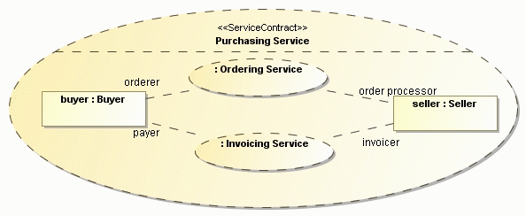

| Example: ServiceContract (SoaML) |
 |
|
| Related Elements |
|---|
In the context of services modeling, ServiceContracts can be used to model the specification for a specific service. A ServicesArchitecture then can be used to model the requirements for a collection of participants that provide and consume services defined with service contracts. When modeling the requirements for a particular service, a ServiceContract captures an agreement between the roles played by consumers and providers of the service, their capabilities and needs, and the rules for how the consumers and providers must interact. The roles in a ServiceContract are typed by Interfaces that specify Operations and events that comprise the choreographed interactions of the services. A ServiceInterface may fulfill zero or more ServiceContracts to indicate the requirements it fulfills but they are usually one-one. Figure 1 presents an example of a ServiceContract. The orderer and order processor participate in the contract. Figure 1. An OrderingService ServiceContract
The service contract diagram shows a high level "business view" of services but includes ServiceInterfaces as the types of the roles to ground the business view in the required details. While two roles are shown in the example, a ServiceContract can have any number of roles. Identification of the roles can be augmented with a behavior, such as the one shown in Figure 2. Real-world services typically are long-running, bi-directional, and asynchronous. This real-world behavior shows the information and resources that are transferred between the service provider and consumer. Figure 2. Behavior diagram documenting a ServiceContract protocol
The above behavior (a UML interaction diagram) shows when and what information is transferred between the parties in the service. In this case a fulfillPurchaseOrder message is sent from the orderer to the order processor, and the order processor eventually responds with either a shipment schedule or an order-rejected response. The service interfaces that correspond to the above types are shown in Figure 3. Figure 3. ServiceInterfaces involved in the behavior
Figure 4 illustrates the concept of compound services. Figure 4. A ServiceContract for a compound service  Real-world services often are complex and are made up of simpler services as "building blocks." Using services as building blocks is a good design pattern, because it can decouple finer grain services and make them reusable across a number of service contracts. Finer grain services can then be delegated to internal actors or components for implementation. Above is an example of a compound ServiceContract composed of other, nested, ServiceContracts. This pattern is common when defining enterprise level ServicesArchitectures, which tend to be more complex and span an extended process lifecycle. The purchasing ServiceContract is composed of 2 more granular ServiceContracts: the "Ordering Service" and the "Invoicing Service." The buyer is the "orderer" of the ordering service and the "invoice receiver" of the invoicing service. The "Seller" is the "Order processor" of the ordering service and the "invoicer" of the invoicing service. ServiceContracts can be nested to any level using this pattern. The purchasing service defines a new ServiceContract by piecing together these other two services. It is common in a compound service for one role to initiate a sub-service but then to be the client of the next. There is no expectation that all the services must go the same direction. This allows for long-lived, rich, and asynchronous interactions between participants in a service. Do not confuse a compound ServiceContract with a service that is implemented by calling other services, such as might be specified with a Participant ServicesArchitecture and/or implemented with BPEL. A compound ServiceContract defines a more granular ServiceContract based on other ServiceContracts. This is shown in Figure 5. Figure 5. A compound service, realized using subsidiary ServiceContracts and ServiceInterfaces with ports
A compound service has service interfaces with ports, each port representing its role in the larger service contract. Figure 5 shows the Service Interfaces corresponding to the buyer and seller in the purchasing service, a compound service. The seller has two ports, each corresponding to the roles played in the ordering service and invoicing service. Likewise, the buyer has two ports, each corresponding to the roles it plays in the same services. These ports are typed by the ServiceInterfaces of the corresponding nested services. The purchasing service specifies how these classes work together and defines the behavioral specification required for each. When a compound service is used, it looks no different than any other service in a services architecture. This hides the detail of the more granular service in the high-level architecture, but it still provides traceability through all levels. |


Several of the above definitions were copied from the Service oriented architecture Modeling Language (SoaML) Specification for the UML Profile and Metamodel Services. View the full copyright notice.
Licensed Materials - Property of IBM |